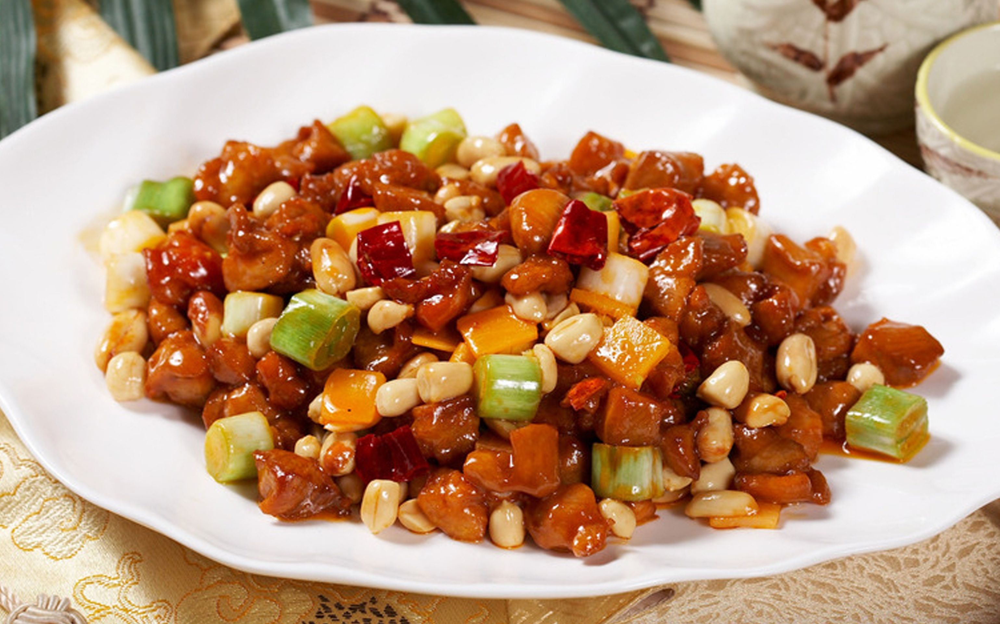

Kung Pao Chicken

Description
Kung Pao Chicken is a classic Sichuan-style stir-fry dish that combines
tender diced chicken with crunchy peanuts, dried chili peppers, and a
savory-sweet sauce. It's known for its bold, complex flavor profile—spicy,
slightly numbing from Sichuan peppercorns, and balanced with a hint of
sweetness and tang from vinegar and sugar. The dish is not only a staple
in Chinese restaurants worldwide but also a beloved home-cooked favorite
across China.
Traditionally, Kung Pao Chicken is made with marinated chicken thighs for
a juicier texture, quickly stir-fried over high heat to retain moisture
and crunch. The addition of vegetables like bell peppers or scallions is
sometimes used, especially in Western versions, but the authentic Sichuan
rendition keeps it simple, focusing on the harmony between the sauce, the
chicken, and the spice.
Ingredients
Main:
- Chicken (thigh or breast), diced – 300g
- Roasted peanuts – 50g
- Dried red chilies – 10–15 pieces
- Sichuan peppercorns – 1 tsp
- Garlic, minced – 2 cloves
- Ginger, minced – 1 tsp
- Scallions, chopped – 2 stalks
Marinade:
- Soy sauce – 1 tbsp
- Shaoxing wine (or dry sherry) – 1 tbsp
- Cornstarch – 1 tsp
Sauce:
- Soy sauce – 1 tbsp
- Dark soy sauce – 1 tsp
- Vinegar (Chinkiang or black vinegar) – 1 tbsp
- Sugar – 1 tsp
- Water – 2 tbsp
- Cornstarch – 1 tsp
Steps
-
Marinate the chicken: Mix diced chicken with soy sauce,
Shaoxing wine, and cornstarch. Let sit for 10–15 minutes.
-
Prepare sauce: In a small bowl, combine all sauce
ingredients and set aside.
-
Fry aromatics: Heat oil in a wok. Stir-fry Sichuan
peppercorns and dried chilies until fragrant.
-
Cook chicken: Add marinated chicken and stir-fry until
almost cooked through.
-
Add flavor: Stir in garlic, ginger, scallions, and
sauce. Cook until thickened and glossy.
-
Finish: Toss in peanuts, mix well, and serve hot with
steamed rice.